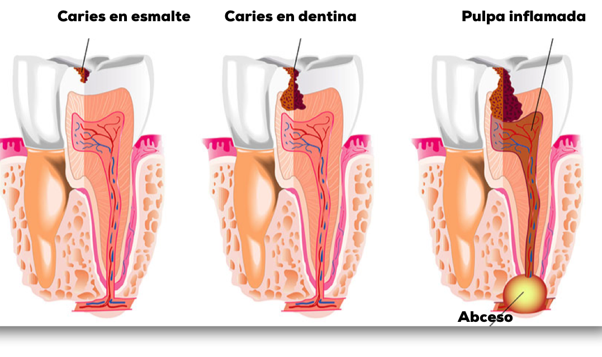

CARIES

Caries
La caries dental es una enfermedad bucodental que afecta casi al 100% de la población, tanto adultos como niños.
En numerosas ocasiones, se da por supuesto que la aparición de caries es inevitable. Esto es un pensamiento totalmente erróneo, dado que la caries es una enfermedad que se puede prevenir si se mantiene una buena higiene oral.
Precisamente esa higiene oral deficiente es lo que produce que los tejidos del diente se vayan destruyendo, lo que puede causar graves consecuencias si no se acude al dentista a su debido tiempo.
Un buen ritual de higiene bucodental consiste en cepillarse los dientes, al menos, dos veces al día, aunque lo recomendable es que se haga tras cada comida. Además, no debemos olvidarnos de limpiar la lengua, puesto que es una zona donde se acumulan bacterias con facilidad. Otro aspecto que no debes olvidar es el uso del hilo dental, puesto que el cepillo no logra acceder al espacio que hay entre cada diente.
Además del cepillado de dientes, es muy importante realizar las revisiones dentales que tu dentista considere óptimas para mantener la salud de tu boca en buen estado.